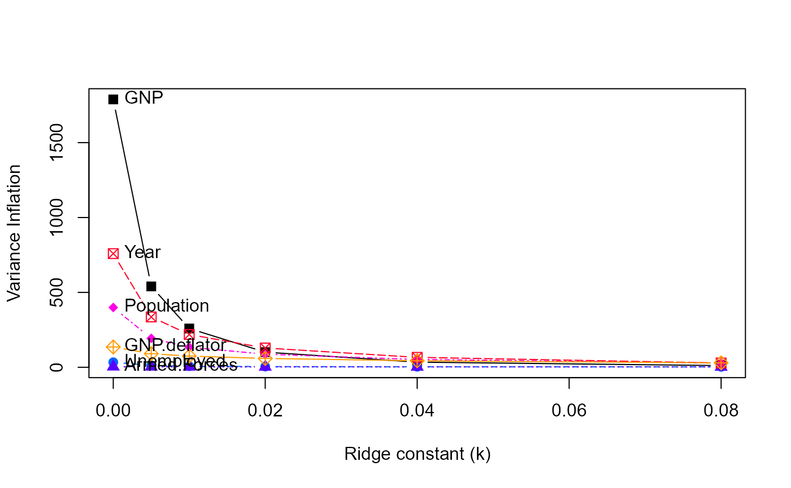
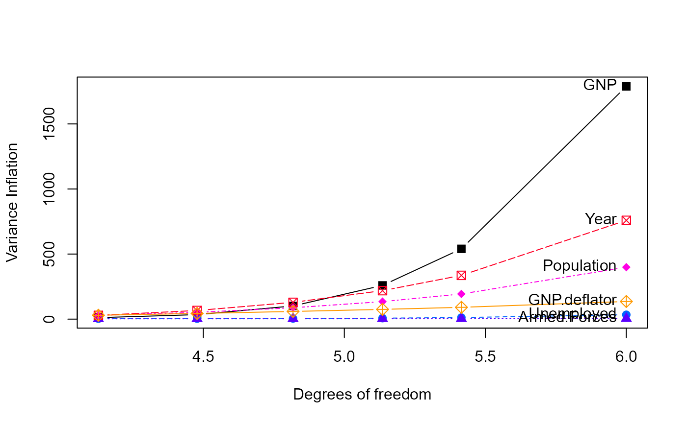
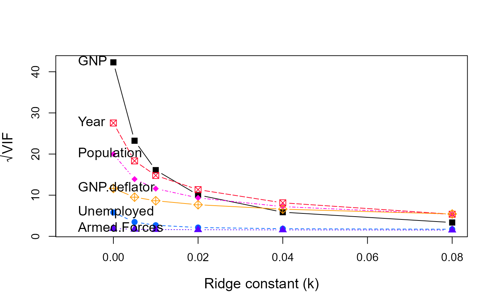
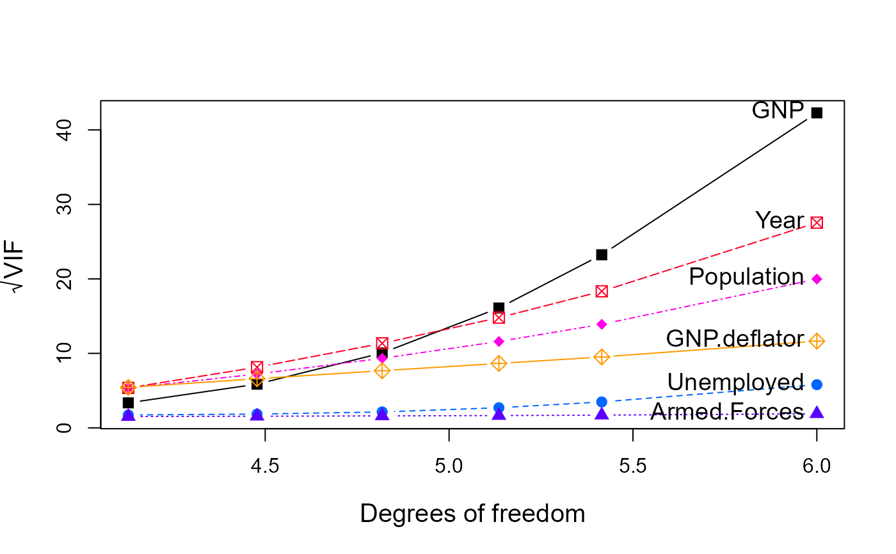

The function vif.ridge calculates variance inflation factors for the
predictors in a set of ridge regression models indexed by the
tuning/shrinkage factor.
Value
Returns a matrix of variance inflation factors of the same size and
shape as coef{mod}. The columns correspond to the predictors in the
model and the rows correspond to the values of lambda in ridge
estimation.
Details
Variance inflation factors are calculated using the simplified formulation in Fox & Monette (1992).
Examples
data(longley)
lmod <- lm(Employed ~ GNP + Unemployed + Armed.Forces + Population +
Year + GNP.deflator, data=longley)
vif(lmod)
#> GNP Unemployed Armed.Forces Population Year GNP.deflator
#> 1788.51348 33.61889 3.58893 399.15102 758.98060 135.53244
longley.y <- longley[, "Employed"]
longley.X <- data.matrix(longley[, c(2:6,1)])
lambda <- c(0, 0.005, 0.01, 0.02, 0.04, 0.08)
lridge <- ridge(longley.y, longley.X, lambda=lambda)
coef(lridge)
#> GNP Unemployed Armed.Forces Population Year GNP.deflator
#> 0.000 -3.4471925 -1.827886 -0.6962102 -0.34419721 8.431972 0.15737965
#> 0.005 -1.0424783 -1.491395 -0.6234680 -0.93558040 6.566532 -0.04175039
#> 0.010 -0.1797967 -1.361047 -0.5881396 -1.00316772 5.656287 -0.02612152
#> 0.020 0.4994945 -1.245137 -0.5476331 -0.86755299 4.626116 0.09766305
#> 0.040 0.9059471 -1.155229 -0.5039108 -0.52347060 3.576502 0.32123994
#> 0.080 1.0907048 -1.086421 -0.4582525 -0.08596324 2.641649 0.57025165
vridge <- vif(lridge)
vridge
#> GNP Unemployed Armed.Forces Population Year GNP.deflator
#> 0.000 1788.51348 33.618891 3.588930 399.15102 758.98060 135.53244
#> 0.005 540.04391 12.118058 2.920757 193.29890 336.15377 90.62954
#> 0.010 258.99935 7.284398 2.732975 134.42069 218.84254 74.78548
#> 0.020 101.11696 4.572957 2.577977 87.29189 128.82070 58.93518
#> 0.040 34.42567 3.422139 2.440659 52.22396 66.31015 43.55638
#> 0.080 11.28144 2.994018 2.301110 28.59266 28.82089 29.52231
# plot VIFs
pch <- c(15:18, 7, 9)
clr <- c("black", rainbow(5, start=.6, end=.1))
matplot(rownames(vridge), vridge, type='b',
xlab='Ridge constant (k)', ylab="Variance Inflation",
xlim=c(0, 0.08),
col=clr, pch=pch, cex=1.2)
text(0.0, vridge[1,], colnames(vridge), pos=4)

matplot(lridge$df, vridge, type='b',
xlab='Degrees of freedom', ylab="Variance Inflation",
col=clr, pch=pch, cex=1.2)
text(6, vridge[1,], colnames(vridge), pos=2)

# more useful to plot VIF on the sqrt scale
matplot(rownames(vridge), sqrt(vridge), type='b',
xlab='Ridge constant (k)', ylab=expression(sqrt(VIF)),
xlim=c(-0.01, 0.08),
col=clr, pch=pch, cex=1.2, cex.lab=1.25)
text(-0.01, sqrt(vridge[1,]), colnames(vridge), pos=4, cex=1.2)

matplot(lridge$df, sqrt(vridge), type='b',
xlab='Degrees of freedom', ylab=expression(sqrt(VIF)),
col=clr, pch=pch, cex=1.2, cex.lab=1.25)
text(6, sqrt(vridge[1,]), colnames(vridge), pos=2, cex=1.2)
